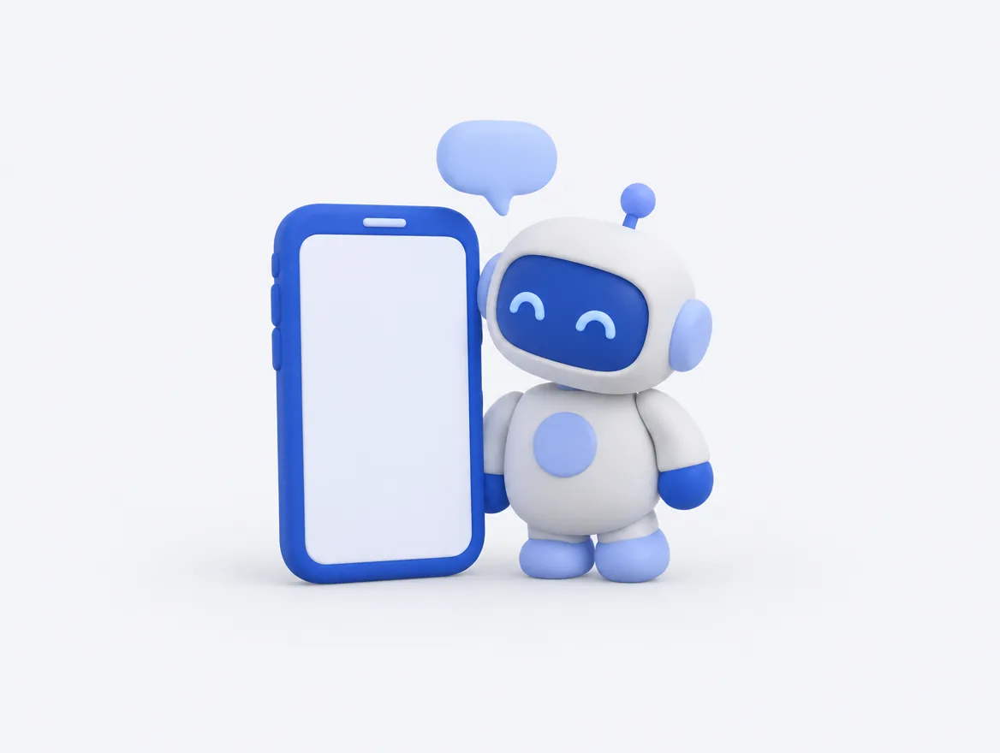
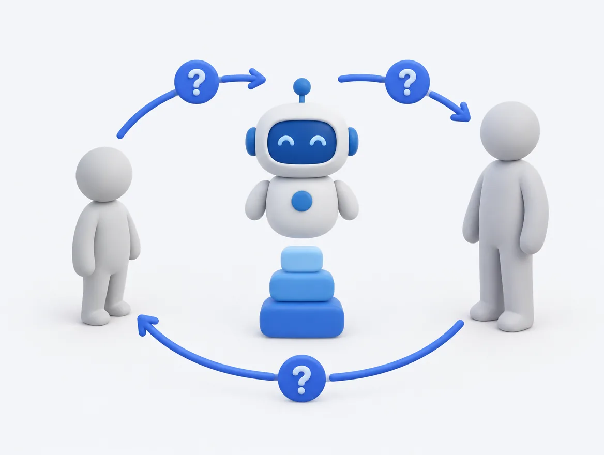
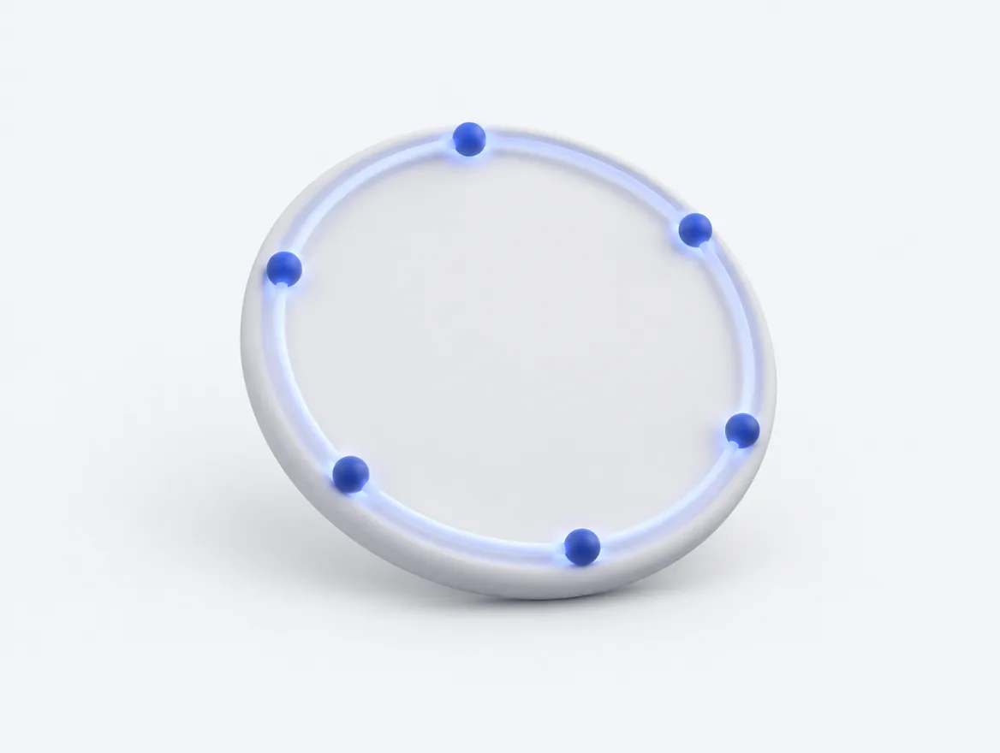
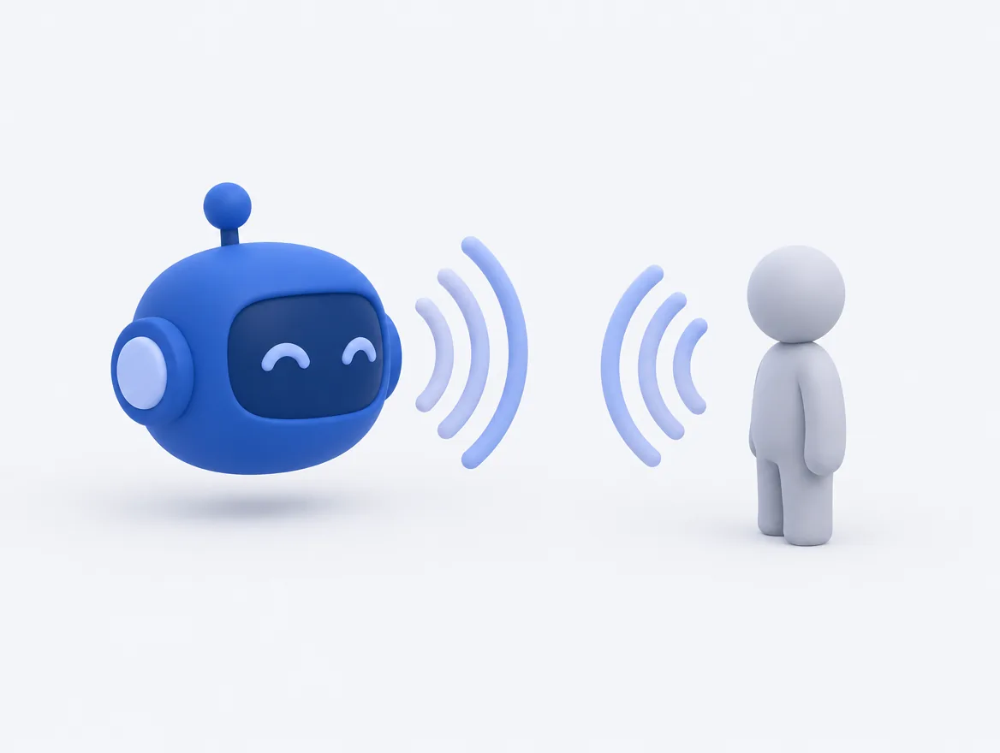
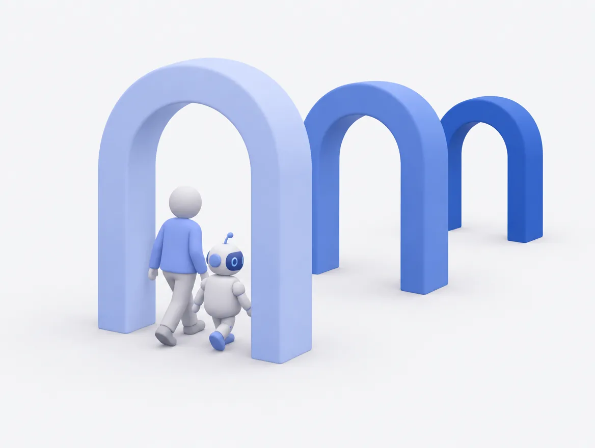
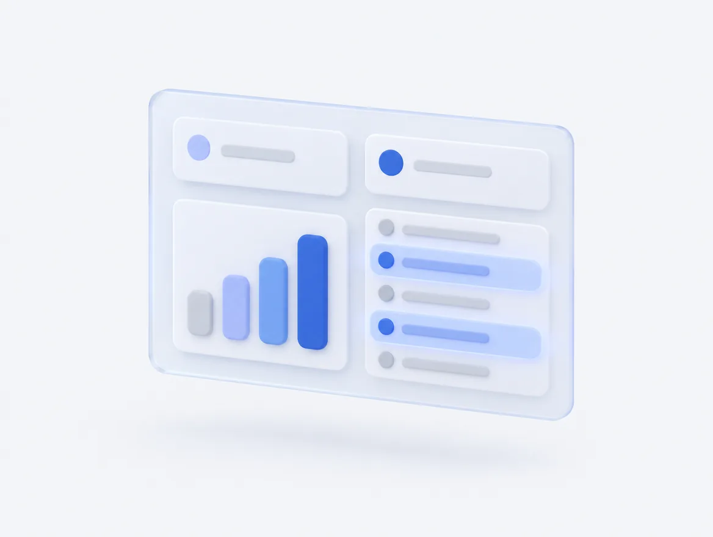

ai-bo › サービス詳細
サービス詳細ai-boは、こういうサービスです。
クリエイターが使うのはLINEだけ。運営の方が使うのは、ブラウザで開く管理画面だけです。運営の日課は、日次データを1回アップロードすることだけ。ここでは、ai-boが実際に何をするのかを具体的にご説明します。
クリエイター側
LINEで、毎日その人だけの声かけが届きます。こちらから話しかければ、いつでも相談にのります。アプリのインストールは不要です。
運営側
管理画面を開くと「今日、誰に何をすべきか」が分かります。一人ずつ確認して回る必要はありません。
日課
運営の方が日次データを1回アップロードするだけです。シナリオを書いて仕込む作業も、対象者リストを作る作業もありません。
毎朝9時に、
その人だけの文面が届きます。
その方の配信実績——配信した日数、配信時間、ダイヤ、フォロワーの動き——を見て、その日の文面をその場で作ります。定型文を差し替えているのではありません。

- 毎朝9時（日本時間）に自動で届きます。 配信の時刻は、事務所ごとに変更できます
- 全員に同じ文面は送りません。 定型文の使い回しもしません
- 全員に毎日送るわけでもありません。 その日に声をかける意味がある方を選んで送ります。毎日全員に送ると、かえって読まれなくなるためです
- 所属90日未満の方は、常に対象です。 立ち上がりの時期だけは、選別の対象から外しています
誰に声をかけるかは、
毎日、自動で決まります。
全員の実績を毎日集計し、「声をかけたら、どのくらい変化が期待できるか」と「その方の反応しやすさ」から順位をつけます。運営の方が対象者リストを作る作業は発生しません。
データが古いときや欠けているときは、断定的な声かけを控えます。 誤った前提で声をかけてしまうことを防ぐための安全弁です。
※ 順位づけの計算式・重み・しきい値は公開しておりません。指標に合わせた操作を避けるためです。
使うほど、
御社専用に育っていきます。
ai-boが判断できないことを聞かれたとき、推測では答えません。運営の方に取り次ぎ、その回答を次からは自分で答えられるようになります。ai-boのいちばん特徴的な仕組みです。

クリエイターが、ai-boには判断できない事実を尋ねる
規定の内容、締切、条件など。ai-bo側では確かめようのないことです。
ai-boは推測で答えません
「確認して、必ずお返しします」とお伝えします。分からないことを分かったふりで答えることはありません。
運営の方のLINEに、質問が届きます
管理画面を開いていなくても気づけます。
運営の方が回答すると、ai-boの言葉に変換されて本人へ届きます
このとき、数値・日時・条件といった事実は一字一句変えません。言い回しだけをai-boの話し方に揃えます。
その回答が蓄積されます
次に同じ質問が来たら、ai-boがその場でお答えします。使うほど、取り次ぎの回数は減っていきます。
一緒に配信する相手を、
探すところから日程調整まで。
エージェンシー内のクリエイター同士で予約バトルの相手を探します。候補出しから日程調整までai-boが間に入って行います。運営の方が間に入る必要はありません。
候補を出す
ai-boが候補を5人までお見せします。直近30日に組んだ相手は外します。同じ組み合わせばかりにならないようにするためです。
相手に打診する
ひとこと添えて送ります（100文字まで）。返事がないまま48時間たつと、自動で取り下げます。断られたことが分かりにくい形で止まらないようにしています。
日程を決める
希望の枠を最大3つまで出せます。1枠60分、開始は30分刻み、翌日から14日先まで。相手が選んだ時点で成立します。
コラボ相手とのやりとり
ai-boを経由してメッセージのやりとりができます。バトルのルールなどを当事者同士で打ち合わせが可能です。連絡先の交換や、不適切な内容は通さない設計にしています。
当日
開始の60分前にリマインドが届きます。
終わったあと
48時間以内に結果を受け付けます。「実施できた」「相手が来なかった」「自分が行けなかった」の3つから選ぶだけです。
- 送るひとことは、送信前に内容を確認しています。 連絡先の交換や、不適切な内容はお通ししません
- 進行状況は管理画面で見られます。 誰と誰が、いまどの段階にいるかが分かります
自動で動くものを、
すべて書き出します。
「いつ届くんですか」によくお答えしているものです。すべて日本時間。運営の方が操作しなくても、この通りに動きます。

| いつ | 何が起きるか | 届く先 |
|---|---|---|
| 毎日 9:00 | 毎朝の声かけ（対象の自動選定 → 配信） | クリエイター |
| 毎日 12:00 | 機能のご案内（連携から1〜4日目の方へ、順番に） | クリエイター |
| 毎日 19:00 | 日次データの取り込み催促（データが古いときだけ） | 運営 |
| 毎日 20:00 | 連携が24時間止まっている方へのご案内（各1回） | 両方 |
| 毎日 23:00 | 配信メモのリマインド | クリエイター |
| 15分ごと | コラボの処理（期限・報告・リマインド） | クリエイター |
| 毎月1日 朝 | 月初スタート便（この日は毎朝の声かけの代わり） | クリエイター |
| 毎月最終日 21:00 | 月末ふりかえり便 | クリエイター |
| 月末10日以内の火・金 | 追っかけメッセージ（届きそうな方だけ・月2〜3回） | クリエイター |
日次データは約2日遅れて届きます。リアルタイムではありません。 そのため「いま、あと15分です」という当日の声かけはできません。「次回は1時間を目安に」という、後からのふり返りとしてお伝えしています。
文字が苦手な方は、
声でも話せます。
電話のようにai-boと会話できます。声は8種類（女性4・男性4）、性格6種類、テンション3段階から選べます。組み合わせは144通りです。

- 上限があります。 お一人あたり月60分・1回10分まで。事務所全体では月3,000分まで
- 想定を超えて費用が膨らまない設計です。 上限はこのためにあります
- 通話の内容も安全チェックの対象です。 文字に起こしたうえで、文字のやり取りと同じ確認を行います
立ち上がりと、
止まったあとに手厚くします。
いちばん結果が変わるのが、この2つの場面だからです。どちらも、あらかじめ決めた段取りで動きます。

新人90日プログラム（所属90日未満の方）
| 時期 | 見るもの | |
|---|---|---|
| 関門1 | 1ヶ月目 | 入会からのペースと、続けられているか |
| 関門2 | 2ヶ月目 | 配信量の達成と、ダイヤの立ち上がり、その伸び |
| 関門3 | 3ヶ月目 | 一定の到達と、配信量の維持 |
この期間の方は、毎朝の声かけに常時入ります。選別の対象にしません。
配信が止まった方の引き戻し
| 経過 | 動き |
|---|---|
| 10日 | 声かけ①（軽い接触）。同時に、配信メモのリマインドを止めます |
| 14日 | 声かけ②（角度を変えて） |
| 21日 | 声かけ③ ＋ 運営の担当者へ通知（人の出番です。通知はこの1回だけで、毎日は届きません） |
| 35日〜 | 管理画面の「休眠」へ移動 |
- 3つのステップは、反応があって初めて進みます。 返事がないまま次を送り続けることはしません
- まず雑談で温めます。 この段階では数字の話を一切しません。そのあと、過去を責めずに思い出していただき、最後に最小の一歩を添えます
- その方のふだんの配信間隔も見ています。 もともと週1ペースの方を「10日空いた」と誤って判定しないためです
クリエイターが使える機能。
すべてLINEの中で完結します。別のアプリを入れていただく必要はありません。
話す・相談する
- いつでも相談 24時間、話しかければ返信します。直近12件のやり取りを踏まえるので、話が繋がります
- 雑談もできます 配信の話だけではありません。雑談のときは配信の話に切り替えません
- 呼びかけ名を決められます 連携の直後に伺います。スキップもでき、あとから何度でも変えられます
- 音声通話 声で話せます（上限あり・06を参照）
記録する・つながる
- 配信メモ その日の配信をワンタップで記録。一日の区切りは朝5時なので、深夜に終わった配信も前日分として扱われます
- コラボ相手の紹介 相手探しから日程調整、終わったあとの報告まで（04を参照）
- 事務所への質問の取り次ぎ 聞きづらいことも、ai-bo経由なら聞けます（03を参照）
- ai-boランク 10段階の独自指標。配信日数・配信時間・ダイヤの3つすべてを満たした最高位がその人のランクです
ai-boランクは、事務所の報酬ランクとは別物です。 最初の1段は、1時間の配信を1回すれば届きます。最初の手ごたえを早くお渡しするためです。毎月1日に積み上げ直しになりますが、前の月のランクは画面に併記されるので、実績が消えたようには見えません。
開いて最初に出るのは、
「今日、動くべき相手」です。
ブラウザで開きます。数字の一覧ではなく、動くべき相手と、なぜその人が出ているかの理由が日本語の文章で並びます。対応したら1クリックで消えます。

ホームに出る「要対応」の4分類
管理画面のページ
| ページ | 見られるもの |
|---|---|
| ホーム | 要対応者の4分類、主要な指標、クリエイター一覧 |
| 成果・推移 | 見込みと月次の推移、復帰率の比較 |
| クリエイター | 一覧、ai-boとの会話ログ（全文）、担当者別 |
| 個票 | 一人ひとりの詳細、時系列のグラフ、ランク |
| 声かけ配信 | 対象の自動選定、手動での送信、一斉のお知らせ |
| ai-bo稼働 | 送信ログ、取り次ぎの状況、通話の利用状況 |
| コラボ | マッチングの進行状況 |
| データ・設定 | 日次データの取り込み、基準値の編集、運用ツール |
すべてのページで表示する月を切り替えられます。 また、インセンティブの基準値は管理画面から担当者ご自身で変更できます。規定が改定されても、その日から正しい判定に切り替わります。過去の月は当時の基準のまま判定されます。
本人に見せないものを、
あらかじめ決めてあります。
運用の中で判断するのではなく、設計として固定しています。担当者が気をつけて運用する、というかたちにはしていません。
- 事務所の報酬やインセンティブの仕組みは表示しません。 設計上の禁則です
- 他の人の実績や順位は出しません。 比較は本人に見せません
- ランクが下がったことは伝えません。 上がったときだけお祝いします
- 共有範囲は本人に明示しています。 「やり取りは所属事務所が確認することもあります」と、利用開始時にお伝えしています
- 深刻な相談は見逃しません。 兆候を検知したら、ご本人の同意を得たうえで運営の方に共有します。音声通話でも同じ確認を行います
- データは事務所ごとに完全に分離します。 他の事務所と混ざることはありません
できないことも、先にお伝えします。
商談でよく聞かれるもののうち、答えが「できません」になるものです。あとから分かるより、先に知っていただくほうがよいと考えています。
最短1週間で始められます。
| 導入期間 | 最短1週間。専用環境の構築そのものは1〜2時間です |
| ご用意いただくもの | LINE公式アカウント2つ（クリエイター用・運営用）。手順はこちらでご案内します |
| クリエイターの登録 | LINEで友だち追加 → TikTokのIDを送る → 本人確認 → 運営が承認 |
| 運営の日課 | 日次データを1回アップロードするだけ |
| データの分離 | 事務所ごとに独立した環境。他の事務所と混ざりません |
ai-bo 自身が、ai-bo について答えます。
LINEで友だち追加していただくと、ai-boとそのまま会話できます。実際の受け答えを見ていただくのが、いちばん早いと思います。
ボタンが反応しないときは info@ai-bo-lab.jp へ直接お送りください。